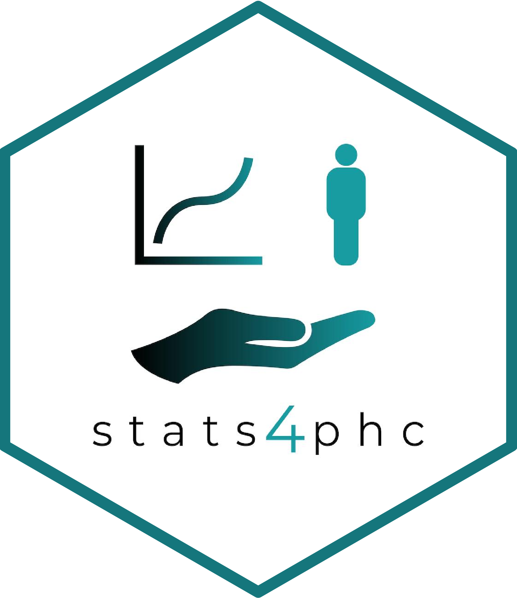

PAVA Risk Estimates
getPAVAest.RdDetermines isotonic regression estimates via pava, given a vector of binary outcomes, and a vector of scores.
Arguments
- outcome
Vector of binary outcome for each observation.
- score
Numeric vector of continuous predicted risk score.
- weights
Vector of numerics to specify PAVA observation weighting.
- ties
String to specify how ties should be handled for PAVA.
- low_events
Numeric, specifying number of events in the lowest bin.
- low_nonevents
Numeric, specifying number of nonevents in the lowest bin.
- high_events
Numeric, specifying number of events in the highest bin.
- high_nonevents
Numeric, specifying number of nonevents in the highest bin.
- hilo_obs
Numeric, specifying number of observations in the highest and lowest bins.
Examples
# Read in example data
auroc <- read.csv(system.file("extdata", "sample.csv", package = "stats4phc"))
rscore <- auroc$predicted
truth <- as.numeric(auroc$actual)
tail(getPAVAest(outcome = truth, score = rscore), 10)
#> score percentile outcome estimate
#> 324 0.3472267 0.81081081 0 0.41818182
#> 325 0.2940563 0.63063063 0 0.32203390
#> 326 0.2956584 0.63963964 0 0.32203390
#> 327 0.3173334 0.70870871 0 0.38095238
#> 328 0.1957009 0.21621622 0 0.08602151
#> 329 0.2909602 0.61561562 0 0.32203390
#> 330 0.1466197 0.03603604 0 0.08602151
#> 331 0.2335213 0.40240240 0 0.09803922
#> 332 0.1310011 0.01201201 0 0.08602151
#> 333 0.3696760 0.85885886 0 0.41818182